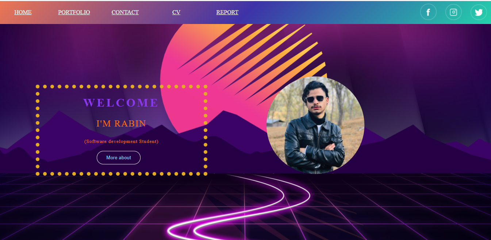
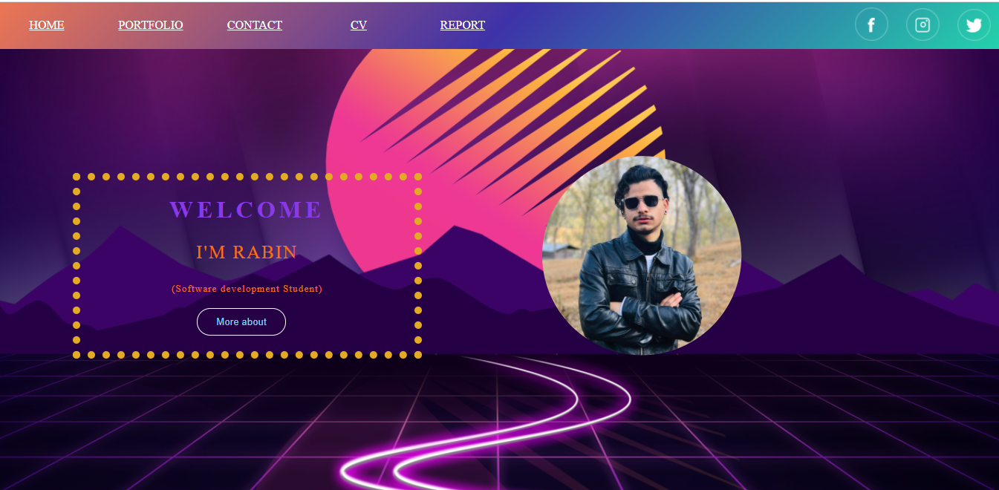

I was curious about learning the html coding and making the website. My dream of making the website began after joining the NAMI college. Mark Zuckerberg was my influencer. I was unknown about coding but my respected sir, Mr. Ankit Thapa helped me to secure my dream as a web developer by teaching HTML. He helped me to gain more knowledge about HTML. He has great sense of humor and makes every classes interesting with interesting slides related to tutor. Fortunately, my past two month here have made me into a something of a coding. I can’t say "expert" because let’s be real.Many difficulties came during the learning time. I used to have difficulties to write a CSS for a html page and writting a correct tags in html page. But the regular pratice and activities assigned by university encouraged me to build my confident and made me able to develop a website by the help of HTML and CSS.
As this was my very first assignment I found many errors but with some related research and observations. I was able to build this webpage. Some of the errors which I have observed during this assignment has been mentioned below:
FOR Index PAGE:
- The "alt" attribute was missed in an "img" element and "lang" attribute was missed in "html" tag.
- Anon., n.d. The WebShala. [Online]
Available at: https://youtu.be/hf3Ncq3UX6c
[Accessed 1 May 2021]. - Anon., n.d. Online Tutorials. [Online]
Available at: https://youtu.be/_13a3r6MYeM
[Accessed 23 october 2020].
- Since my "alt" attribute and "lang" attribute was missed in my first html page “ index.html” so I corrected in it then no error was shown.
- Anon., n.d. W3school. [Online]
Available at: https://www.w3schools.com/html/tryit.asp?filename=tryhtml5_input_form
For Portfolio Page:
- "href" attribute was not allowed on element "script".
- Sultana, E., n.d. Esrat Sultana. [Online]
Available at: https://youtu.be/N1R1xeCCz2k
[Accessed 2019 November 2019]. - Sultana, E., n.d. Esrat Sultana,https://youtu.be/N1R1xeCCz2k. [Online]
Available at: https://via.placeholder.com/350x350.jpg
For CV Page:
- Element "li" was not allowed as a child of element "div".
- Anon., n.d. Online Tutorials. [Online]
Available at: https://youtu.be/hnjHCmaUVPg
[Accessed 1 May 2021].
Overall the page i have used the same background layout so the reference for it :
FOR BACKGROUND IMAGE:

- Walker, Z., n.d. CuteWallpaper.org. [Online]
Available at: https://www.google.com/url?sa=i&url=https%3A%2F%2Fcutewallpaper.org%2F21%2Faesthetic-2560x1440-wallpapers%2Fview-page-21.html&psig=AOvVaw3_LpLUKwy5AYCJdC57GdjQ&ust=1622117950008000&source=images&cd=vfe&ved=0CAMQjB1qFwoTCIDJz8vK5
Hamburger icon menu:

- Anon., n.d. cdnjs.com. [Online]
Available at: https://cdnjs.com/libraries/font-awesome - Anon., n.d. Online Tutorials. [Online]
Available at: https://youtu.be/gt8zOLQ8A0w
[Accessed 14 May 2018].
For index page
 

For contact page


For Portfolio Page


For CV page


The purpose of this assignment was to develop a responsive website and to acknowledge my skills. Since i was able to built my very 1st web page with my skills and research. I have not only learned the design aspects of web development but have also learned how to program in HTML. I was able to show my creative side, through layout and design in this project.